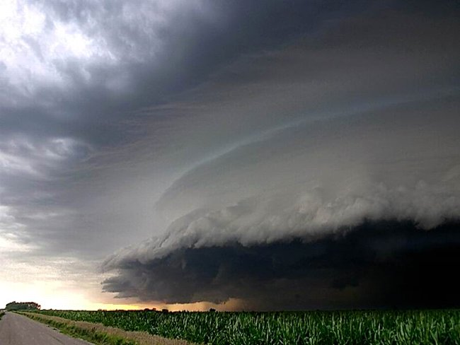
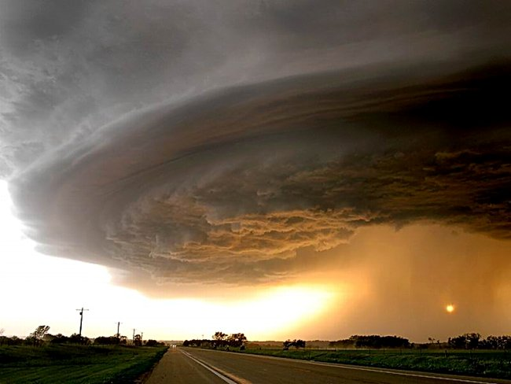
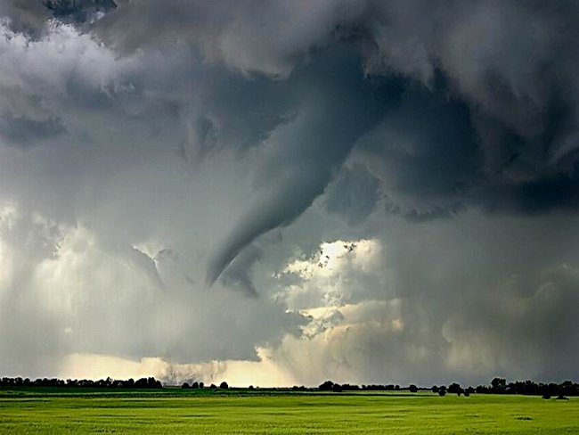
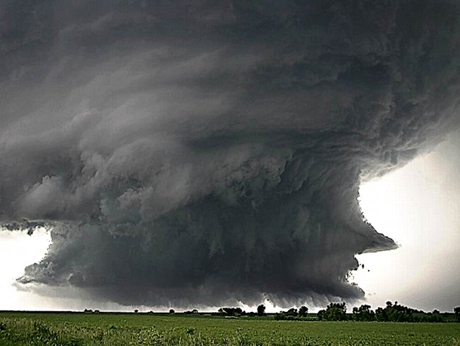
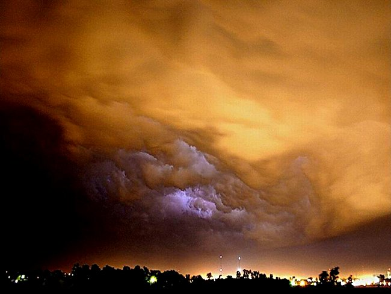
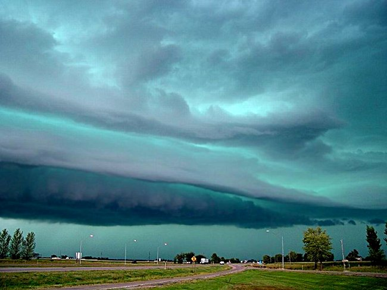
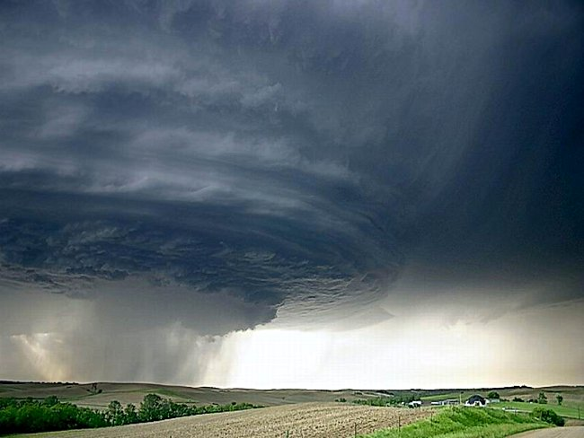
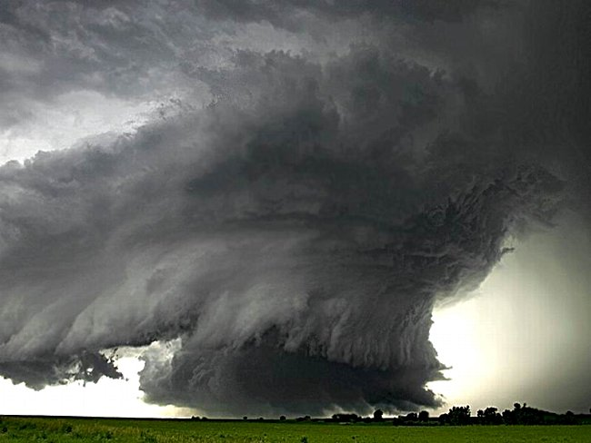
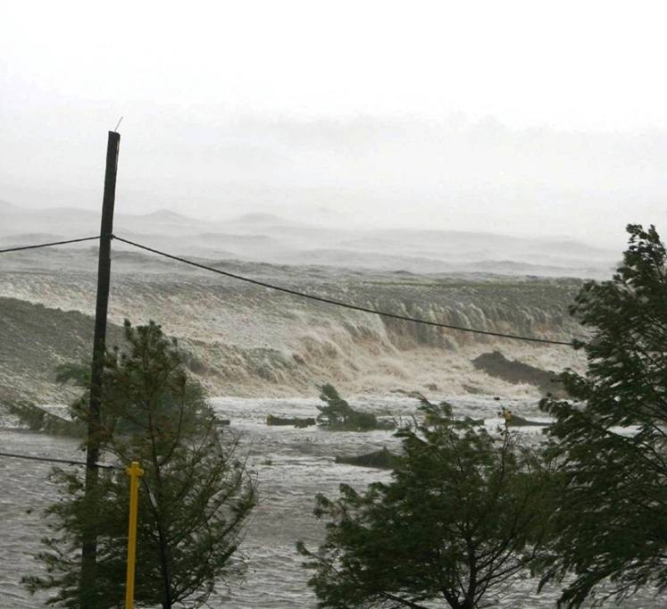

[My mother forwarded this via email]
[Snopes
says these are real pictures, but not of Katrina]
These pictures were taken by a man in Magee, MS where the eye of the storm passed through. Magee is 150 miles North of Waveland, Mississippi where hurricane Katrina made land fall. Katrina did have a certain dramatic beauty while causing such death and destruction.








The following picture was taken from the third story balcony of Saint Stanislaus College located next door to Our Lady of the Gulf church in Bay Saint Louis, Mississippi on the morning of August 29th, 2005.
This is believed to be the initial tidal wave from Hurricane Katrina. The tidal wave was approximately 35 to 40 feet high when it slammed into the beach front communities of Bay Saint Louis and Waveland, Mississippi to completely destroy 99% of every structure along the beach for 9 miles and over ? of a mile inland. The destruction only started there. The flooding that continued inland destroyed the contents of all but 35 homes in these two communities of approximately 14,000 people.

Can you imagine holding your camera steady enough to take these photos!